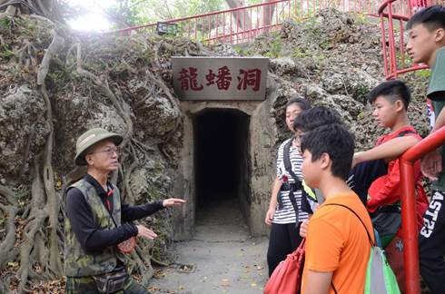
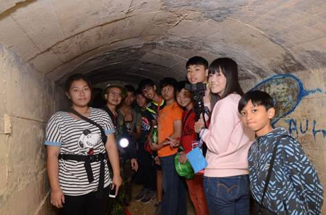
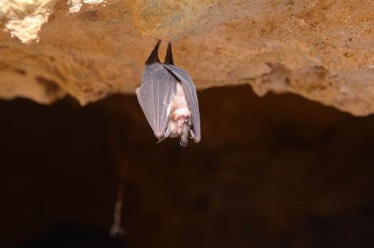
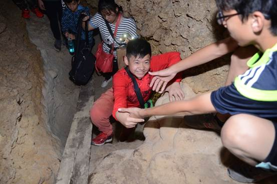
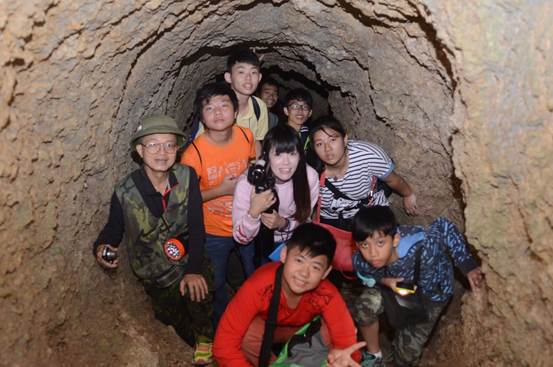
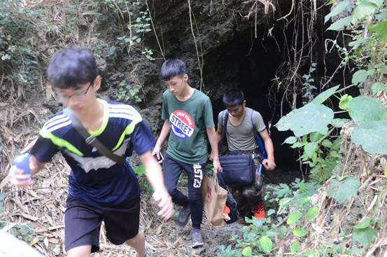

【日據時代時空之旅】 |
| 清水寺(巖) | |
| 連絡電話 | (07)641_2511 > |
| 活動內容 | 在家享用的美味早餐 9:00-11:00 準備穿越時空囉 ! 貼心小提醒:進動支前須帶手電筒.防滑鞋.外套.水，小心撞到頭，不要撞到蝙蝠。 探勘技巧:遇到岔路就右轉，就不會迷路囉 ! |
| 清水巖簡介 | 簡介:高雄八景之一，景色天成，美不勝收 清水巖風景區由多達26處景點組成，最主要的景點是清水寺，廟宇莊嚴清幽，山麓有泉水自石灰岩形成的奇石中湧出，水質清澄，用來泡茶風味絕佳。在攀岩賞泉之外，海象地景形成造型豐富的岩石景觀，以及生長在岩石上的長壽茄冬，尤其令人讚嘆和珍惜，自古以來即列為高雄八景之一，是源遠流長的寶貴自然資產。 |
| 地址 | 高雄縣林園鄉林園北路179號 |
| 清水巖名字由來 | 高雄縣南邊有座石灰岩方山，是由隆起珊瑚礁石灰岩地質構成，平均海拔高度不到50公尺，稱為鳳山丘陵。山麓有伏流泉水從石頭中湧出，水量充沛，即使乾旱季節也不乾涸，灌溉數百畝良田，水質極為清澄，因此命名為清水巖。 |
| 交通資訊 | 方法一：如果要前往清水巖風景區，可在高雄火車站搭乘高雄客運101號班車，至清水岩路口站下車，步行約20分鐘即可到達。 方法二：自行開車可從第1高速公路終點接17號省道，南行至林園鄉，過頂厝橋左轉東林西路，再接林園北路前行，即可見到清水寺牌樓，穿過牌樓即抵達。 |
| 貼心小導覽 | 高雄縣南邊有座石灰岩方山，是由隆起珊瑚礁石灰岩地質構成，平均海拔高度不到50公尺，稱為鳳山丘陵。 山麓有伏流泉水從石頭中湧出，水量充沛，即使乾旱季節也不乾涸，灌溉數百畝良田，水質極為清晰，因此命名為清水巖。 清水巖東南靠海平原，在鄭成功王朝時期，已有先民前往開墾，稱為林園庄，也就是現在的林園鄉。 登上清水巖放眼太平洋，隱約可見小琉球和恆春大武諸山，林園鄉更是盡收眼底。 清水巖在清朝道光年間即築已有寺廟，為簡陋的庵，歷次多次重修，建築古色古香，台灣脫離日本殖民統治光復後，稱為清水寺，再經多次整修，已成為寺宇莊嚴，清靜幽美的佛寺。 鐘乳石不要亂摸喔，因為它會酸鹼中和，小心鍾小姐會告你性騷擾。 |
|  龍蟠洞 必去地點TOP1 大推!! (貼心小提醒，記得帶手電筒和薄外套喔) (盡量約導遊，可以一起聽介紹，也不會迷路喔) 哇! 是大型會議室欸 來開個大大會議吧！  大型會議室 裡面真的好大，可以去像以前的軍人在裡面開會的樣子，有機會快去體驗!!  蝙蝠是因為牆上有許多凹凸不平，所以才會卡在上面  一輩子一定要跟好友去一趟的驚險時空之旅  先經過二號出口，之後再從三號出口出來，這是天井請勿往後  拖著疲憊身軀的出洞囉，帶著滿滿的收穫回家囉 The end |
|